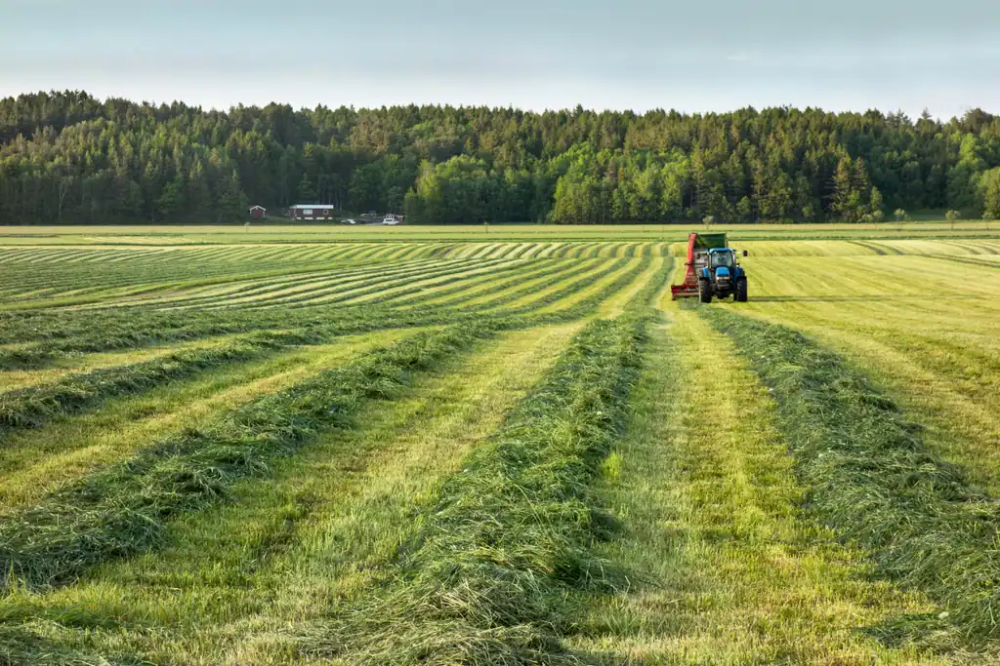
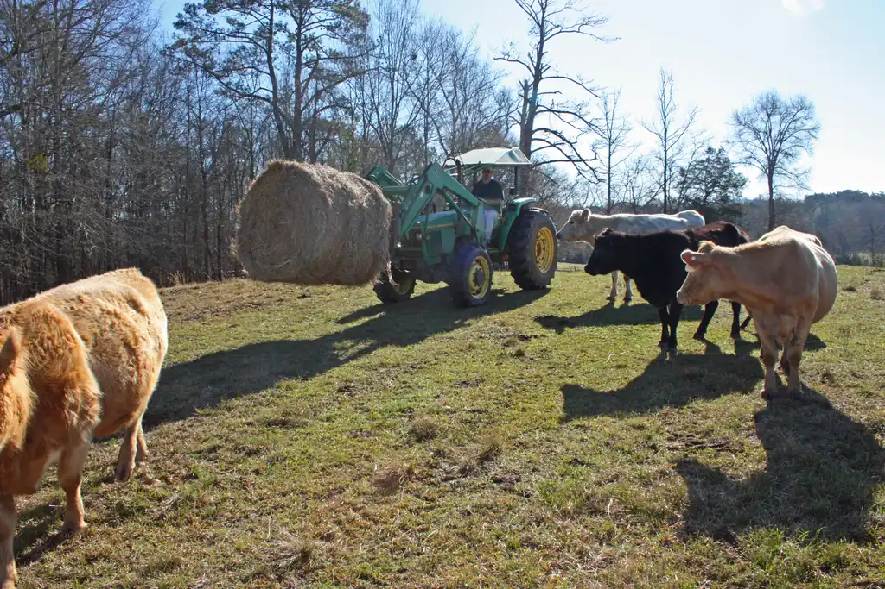

Tractors · Fields · Farm life
The machines that work the land.
A working gallery of farm tractors, from 1920s steel-wheeled giants to today's GPS-guided field machines, out ploughing, haying, harvesting and clearing snow.
The work
What tractors do all year
Tap a kind of work to see every photo of it.
Through the decades
A hundred years on four wheels
From steel lugs and kerosene to cabs, tracks and computers. Swipe through time.
The farm year
Every season has its job
The gallery
Every tractor in the barn
About
Only farms. Only tractors.
Only Farms celebrates the machines and the people that keep the land working: the restored Farmall at the county show, the Fendt pulling a cultivator at dawn, the old Massey that still clears the lane after the first snow.
Every photo here comes from open collections such as Wikimedia Commons. Open any picture to see who took it and under which licence.

Got a tractor story?
A restoration, a family machine or a photo from the field. We'd love to hear about it.
Get in touch